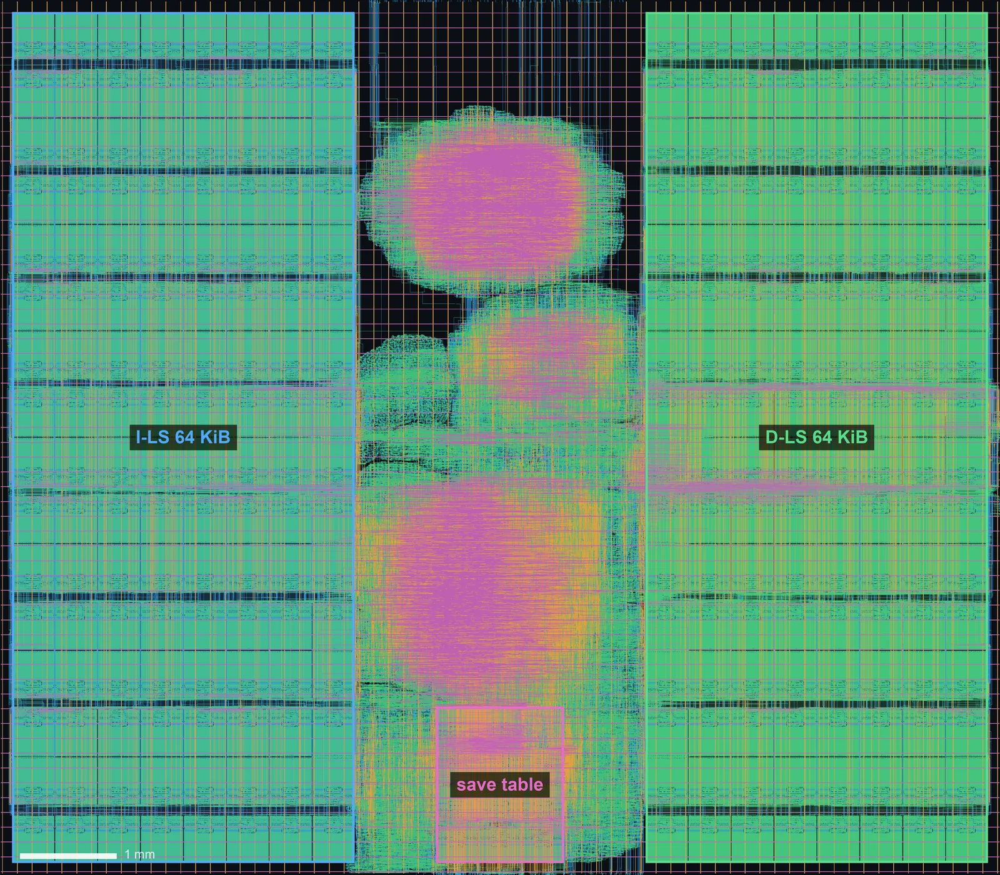
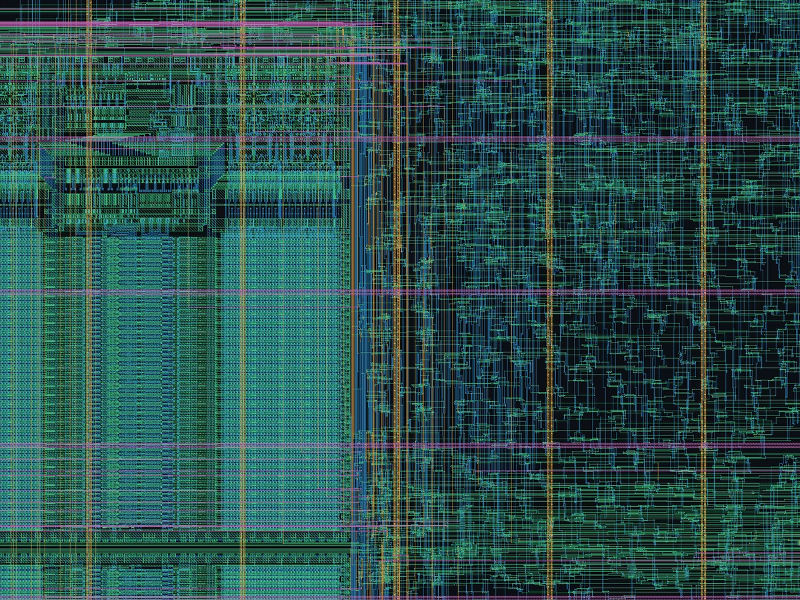

Strata in hardware · an ASIC experiment
ON SILICON
One Strata core, the same SystemVerilog as the simulator and the FPGA, through an open RTL-to-GDS flow on GlobalFoundries' 180 nm GF180MCU: placed, clocked and routed.
A measurement, not a tapeout. Nothing here was signed off (no DRC or LVS run), the timing was not repaired, and the Local Stores are a single-port stand-in for the dual-port RAM the RTL describes. The caveats say what that means. Two and six cores are planned.
01The die
KLayout's drawing of the final layout, only the four routing metals shown: Metal2 blue, Metal3 green, Metal4 amber, Metal5 pink. The SRAM macros are the regular blocks on both sides, in pairs of rows that face a shared channel for their pins; the logic is the strip between them, its wiring densest where the register file and the capability checks sit.


02Where the area goes
The memories dominate. GF180MCU's largest SRAM macro holds 512 bytes in 0.21 mm², so each 64 KiB Local Store is 128 of them, 26.8 mm²; the logic of the whole core is a sixth of one store.
| What | Instances | Area, mm² |
|---|---|---|
I-LS and D-LS: sram512x8 macros | 256 | 53.61 |
Capability save table: sram256x8 macros (256 × 81 bits) | 11 | 1.62 |
| Flip-flops | 11,363 | 0.72 |
| Combinational cells | 127,634 | 2.00 |
| Buffers and inverters (synthesis, design repair) | 68,972 | 1.48 |
| Clock tree | 2,051 | 0.10 |
| Well taps, end caps, antenna diodes | 246,936 | 1.08 |
| Die (10.34 × 9.05 mm) | 93.64 |
The rest of the die is filler and the channels around the macros. The flip-flops are the integer registers (three read ports), each core's copy of the revocation-granule table (three asynchronous read ports), the capability registers, the overlay map and the Transfer Unit's queue. As flip-flops, the save table was 20,736 more of them and a 256-way multiplexer; as SRAM it is what block RAM is on the FPGA.
Against the FPGA
The same core is 30,011 LUTs and 6,869 flip-flops on Xilinx 7-series (Yosys), and 44,253 logic cells routed at 20.0 MHz on a Lattice ECP5-85F (the Hardware page). On GF180MCU it has 11,363 flip-flops (the granule table and the registers are flip-flops here, LUT-RAM there) and runs at 11.9 MHz without timing repair: the FPGA's block RAMs and carry chains are faster than 180 nm SRAM macros and unrepaired gates.
03How fast
OpenSTA after routing, with parasitics extracted by OpenRCX, against a 40 ns target. The period each corner allows is the target minus the worst setup slack.
| Corner | Worst setup slack | Period | Clock | Worst hold slack |
|---|---|---|---|---|
| typical, 25 °C, 5.0 V | −44.1 ns | 84.1 ns | 11.9 MHz | −5.9 ns |
| slow, 125 °C, 4.5 V | −106.8 ns | 146.8 ns | 6.8 MHz | −11.7 ns |
| fast, −40 °C, 5.5 V | −16.1 ns | 56.1 ns | 17.8 MHz | −3.4 ns |
The longest path, at the typical corner, runs 95 cells from a flip-flop to am_req, the atomic-operation
request to the far bus: decode, the capability checks and the request in one cycle. Almost all of its 82 ns
is in the cells, which drive long wires with slow edges because nothing resized them for timing; register to register
the worst path is as long. Hold violations are at the pins and between flip-flops, unrepaired.
The flow could do better: timing-driven placement, post-CTS and post-route timing repair are all off here (see the caveats), and the multi-cycle core has no pipeline to shorten its paths.
04Every stage, timed
The successful run's steps, on an arm64 Mac (18 cores, shared with other jobs), LibreLane's
container with 8 threads. Getting there took a day of failed attempts; they are in
asic/README.md.
| Stage | Tool | Time |
|---|---|---|
| Synthesis | sv2v, Yosys 0.62, ABC (area script) | 5 min 39 s |
| Floorplan, macros, power grid | OpenROAD | 58 s |
| Global placement, pins | OpenROAD | 2 min 28 s |
| Design repair (slew, capacitance, wire length) | OpenROAD resizer | 3 min 7 s |
| Clock tree | OpenROAD TritonCTS | 3 min 22 s |
| Global routing, antenna repair | OpenROAD FastRoute | 4 min 8 s |
| Detailed routing (17 passes, to 0 violations) | OpenROAD TritonRoute | 50 min 1 s |
| Parasitics | OpenRCX | 57 s |
| Timing: three estimates on the way, then 9 corners after routing | OpenSTA | 1 h 35 min |
| GDS | KLayout | 9 s |
| In all | 2 h 47 min |
05What is on the chip
strata_core with its Transfer Unit, multiplier, divider and decoder, the 16-entry overlay
map, as the FPGA builds it. Its ports are the chip's 711 pins: the far bus (transfers and atomics), gift and take,
the granule broadcast and stop. The far bus's other end (T2, system memory, the devices, the other cores' inboxes)
is off-chip. Nothing in rtl/ changes: a script
makes the ASIC copies, and the RAM module is swapped.
- Local Stores: 16 rows of 8 byte-wide 512 × 8 macros each
(
asic/rtl/gf180mcu/strata_ram.sv). - Save table: 11 of the 256 × 8 macros for 256 capabilities of 81 bits. It is read in one state and written in others, so a single-port SRAM is the same memory.
- Floorplan: the I-LS on the left, a 3 mm strip for the logic, the D-LS on the right; the macros' pins are all on one edge, so the rows go in pairs facing a 120 µm channel.
06Caveats
- The Local Stores are a stand-in. The RTL's Local Store is a true dual-port RAM, as FPGA block RAM is; GF180MCU's macros have one port. The stand-in shares it, the core first, so a Transfer Unit access in the same cycle is lost. A real chip needs dual-port SRAM (roughly 1.5 to 2 times the area per bit), banks with a stall, or a double-pumped port.
- No timing repair. OpenROAD's post-CTS
repair_timingdied without a message in its first iteration three times, so it is off; placement is not timing-driven either. Hold violations are not repaired. - No signoff. Detailed routing ended with no violations, but there is no Magic or KLayout DRC, no LVS, and one antenna violation remains. There is no pad ring; the input and output delays are 5% of the period.
- One core only. Two and six cores (with T2 and the inbox network on the chip) are scripted and planned, not run to the end.
07Do it yourself
Docker (LibreLane 3.0.17's arm64 or amd64 image), sv2v and Yosys on the host, and Python for ciel and the pictures. Everything else runs in the container.
asic/pdk.sh gf180mcuthe PDK (open_pdks, the version LibreLane pins), with cielasic/run.sh 1one core through LibreLane's Classic flow, about three hoursasic/render.sh 1the die pictures, with KLayoutasic/collect.sh 1the reports into asic/results/gf180mcu-1/The settings and why each one is there:
asic/README.md; the reports
(area, cell counts, timing paths per corner, run times):
asic/results/gf180mcu-1/.